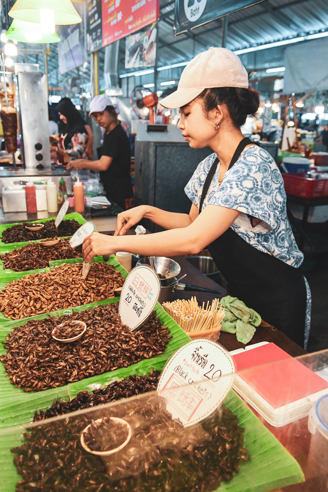
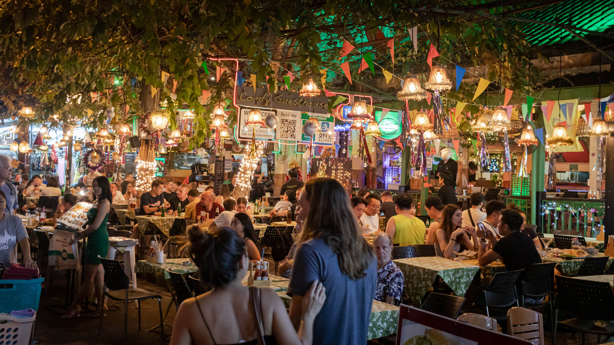
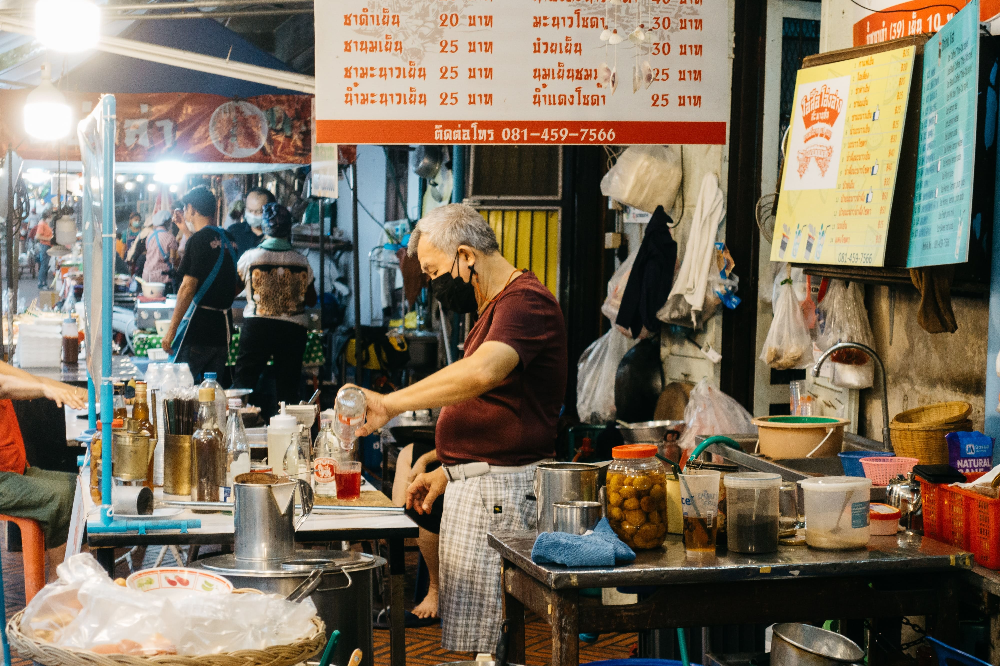

It’s a given that Singaporeans love a good BKK vacay. Jetting off to the +66 means access to glorious street food, endless shopping havens, and massages that’ll have you ooh-ing and ahh-ing all that stress away. Best part? These usually come at incredibly pocket-friendly prices, and that’s exactly the vibe that Chatuchak Night Market Singapore 2023 hopes to bring.
Here’s what you can expect from the free admission, open-air market happening 7th February to 2nd April 2023 at The Grandstand:

From tom yum and green curry to pad Thai and boat noodles, Thai food can be found sprinkled throughout our Little Red Dot. The event organisers know full well that Thai cuisine is a hit among Singaporeans, and you’ll be able to find your all favourites here with prices starting from $4 for light bites to $8 for more filling mains.
Besides just bringing in actual Thai vendors, they’ve made sure that the ingredients used are also sourced from Thailand. Even details like kitchen equipment and cooking methods are preserved to culminate in the ultimate Thai flavour, the kind you’d otherwise only get by travelling over 2,000km to the land of moo ping and mango smoothies.

Seating areas are aplenty, for you to bask in the al fresco ambience and enjoy either sunshine or a light evening breeze.
Muslim visitors, fret not. The food market has an entire stretch of Halal-certified stalls so you can browse with ease. One of the Halal offerings is the deceptively simple but downright addictive Thai Roti.
You can’t go wrong with the Banana and Egg Roti combo. But for a truly traditional experience, we recommend the Foi Thong Roti which sandwiches strands of egg yolk that are steeped in syrup for a deep and sweet creaminess.
Besides Thai food stalls, there are also several Singaporean vendors if you’re looking for some familiar flavours to add to the mix. These include regulars at pasar malams and food bazaar events like Loco Loco – which serves churros and takoyaki, and the Halal-certified Sofnade – which we spotted offering 1L Thai milk tea.

Stay cool and hydrated with the many drink stalls available, especially if you’re attending before sundown. There are elaborate concoctions like the Come Huat With Me, comprising of glutinous rice tea, osmanthus flowers, a juicy pineapple slice, and a syringe of golden syrup for you to metaphorically inject some prosperity into your life.
For a more simple thirst quencher, you can get a selection of Thai iced teas or sodas served in a bag so you can enjoy it like how locals do in Thailand. Similar to our own kopi and teh, you simply have to insert a straw and start sipping away.
For those who are experiencing a bit of deja vu, Chatuchak Night Market Singapore had its first run back in 2020. They launched in early February that year but, as fate would have it, had to cease operations just shy of 2 months in due to Covid restrictions.
The return of such events means another win for us in terms of stepping back into pre-pandemic times, and what makes this even more special is that we get to support Thailand’s humble businesses to help them spring back from financial strain brought on by Covid.
Besides getting to enjoy authentic Thai fare and solid retail therapy without having to hop on a plane, we’re helping to boost the entrepreneurial spirit of these vendors. And, if all works out, the event organisers tease that this could be the vendors’ sign to set up shop in Singapore.
So if you find a particular stall owner whose offerings are right up your alley, make sure to show your support and they may very well become a local mainstay!
Photography retrieved from Unsplash